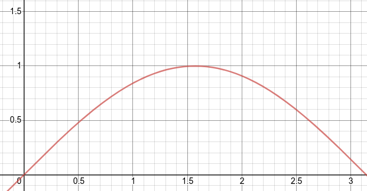
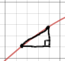
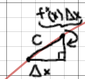
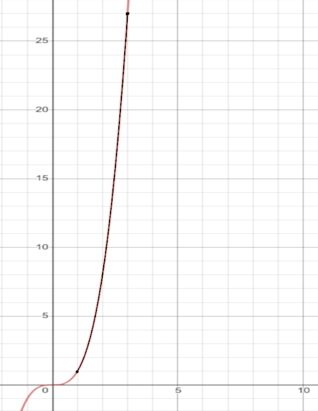

Section 1.3 Arc Length and Surface Area
In this section we cover how to find and use arc length and surface area of a function when revolved around an axis.
Subsection 1.3.1 Arc Length

Similarly to previous section, we need to divide the function into subintervals along the x-axis. If we place dots at the subinterval points and connect the dots, we can get an approximation of the length of the function.
To do this accurately we use the mean value theorum or MVT to find the mean slope between two points using the formula \(slope = \dfrac{f(b)-f(a)}{b-a}\text{.}\) 
Definition 1.3.2. MVT.
Note 1.3.4.
In order to use MVT or find the arc length of a function, the function must be differentiable between the points [a,b] where
By using the pythagorean theorum, we can find that \(c=\sqrt{1 + f'(x_k^*)^2} \Delta x\text{.}\) 
Remark 1.3.5.
To find the total length we need to sum up all of the subintervals:
And to find the exact length, we must take the limit to inifinity:
Finally, applying the definition of a definite integral we get:
Example 1.3.7. Arc Length.
Subsection 1.3.2 Area of a Surface of Revolution

Building on the previous equation, how can we find the surface area of a function that has been revolved around an axis?
Like the previous section, we need to divide the function into equal subsections along the x-axis. If we rotate these subintervals around the x-axis, we get very thin "rubber bands".If we were to "cut open" the rubber band, we would get a rectangle.
We know that the area of a rectangle is \(SA = l \cdot w\text{.}\) In order to apply this, we need to change this equation into variables of out function.
\(l = \sqrt{1 + (f'(x_k^*))^2} \Delta x\) : the lendth is equal to the arc length of the subinterval
\(w = 2 \pi r = 2 \pi (f(x_k^*))\) : the width would be equal to the curcumference of the "rubber band"
When we plug those in we get \(SA_{band} = 2 \pi (f(x_k^*)) \cdot \sqrt{1 + (f'(x_k^*))^2} \Delta x \text{.}\)
If we sum up all of the subsection, we get the total estimated surface area of the function when revolved around the x-axis, and if we take the limit of the sumation to infinity and apply the definition of the definite integral we get: